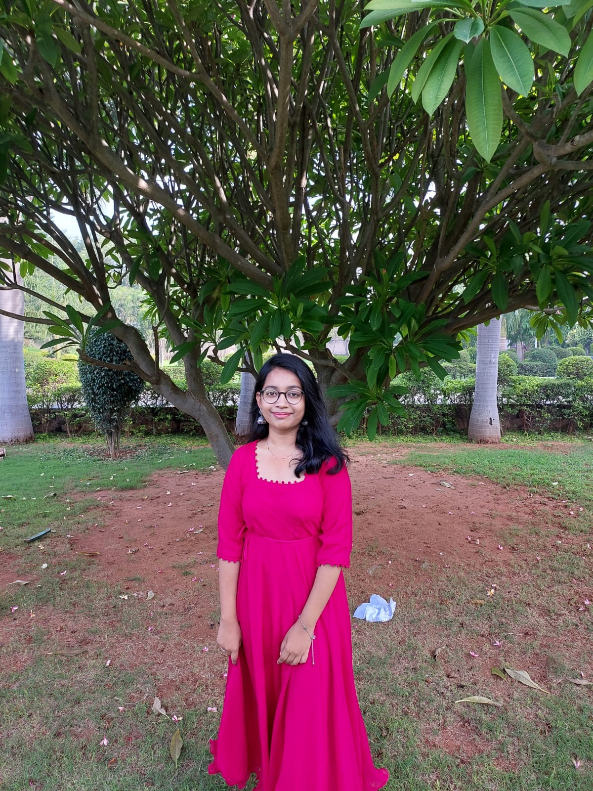

Hello there, My name is Anagha!
A passionate and enthusiastic college student pursuing a third-year B. Tech in information technology. Seeking to use my strong analytical thinking, attention to detail and research skills to effectively serve any company in an internship position. Dedicated, hardworking, and committed to becoming a dependable and valuable team member
A passionate and enthusiastic college student pursuing a third-year B. Tech in information technology. Seeking to use my strong analytical thinking, attention to detail and research skills to effectively serve any company in an internship position. Dedicated, hardworking, and committed to becoming a dependable and valuable team member
